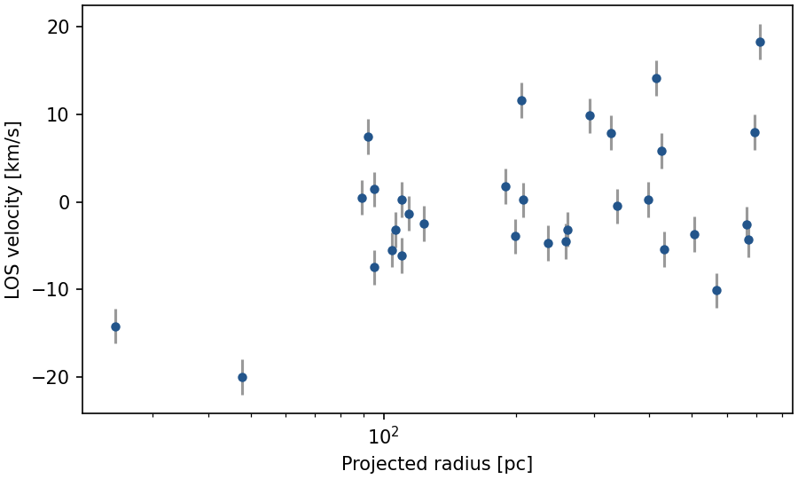
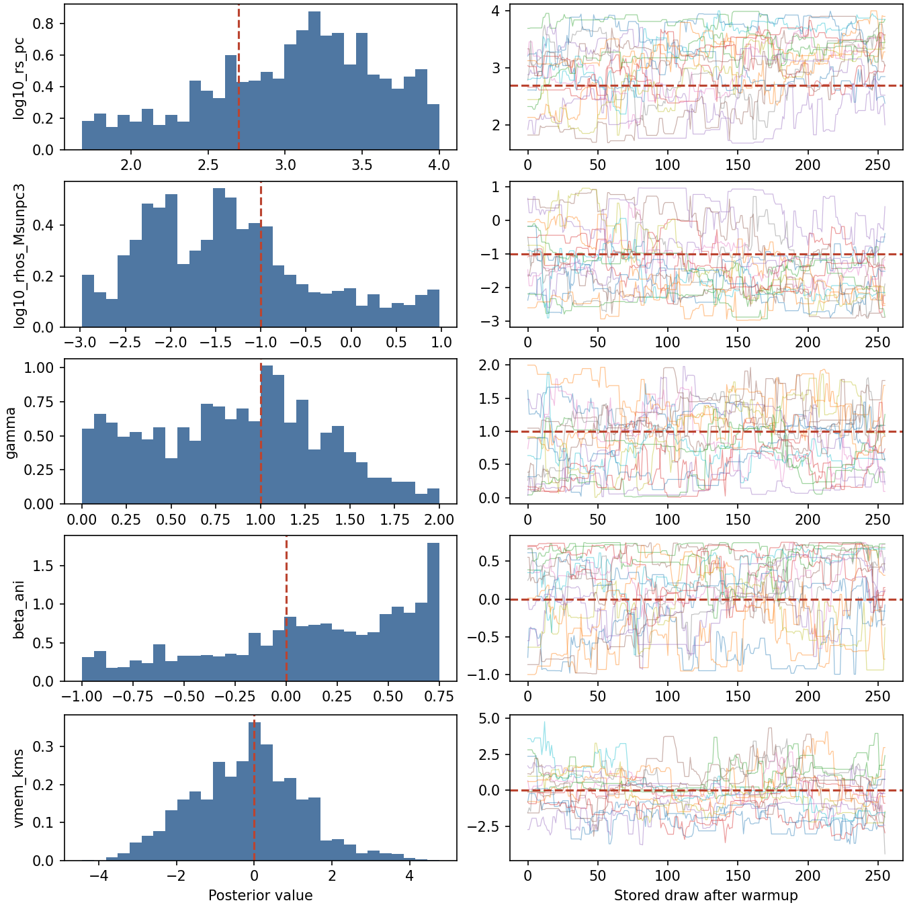
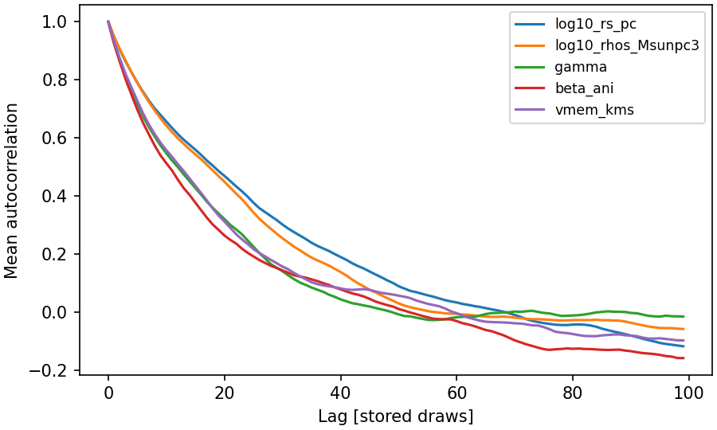
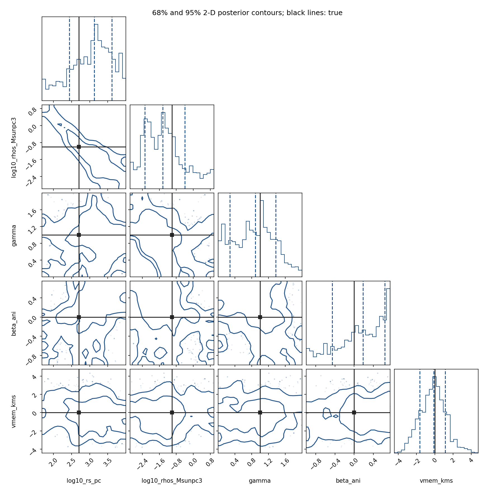
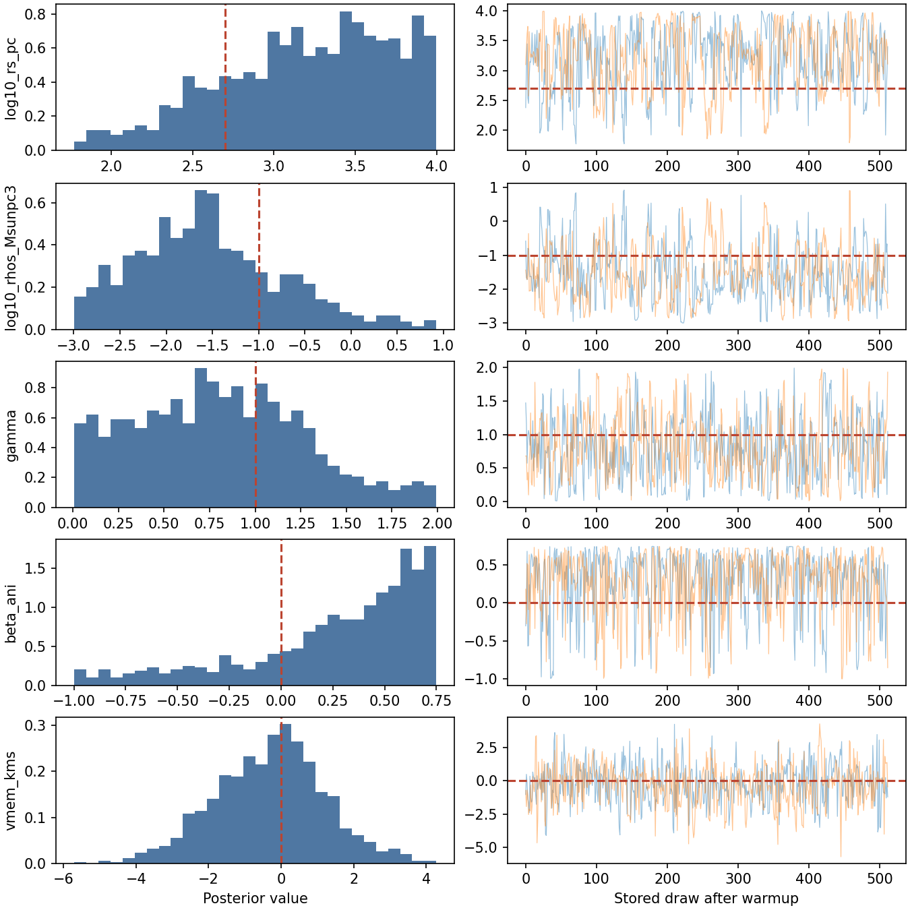
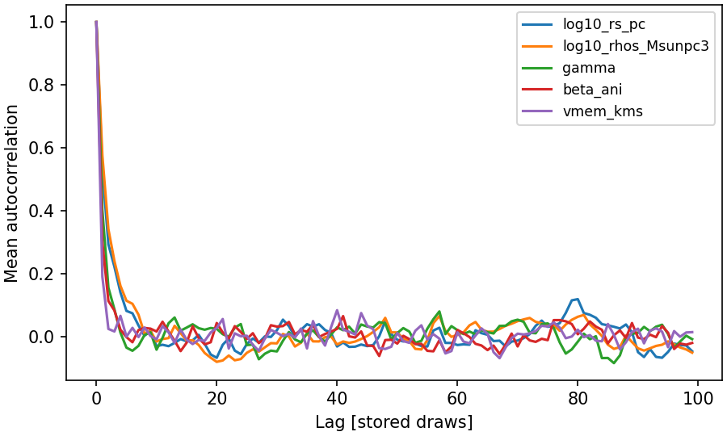
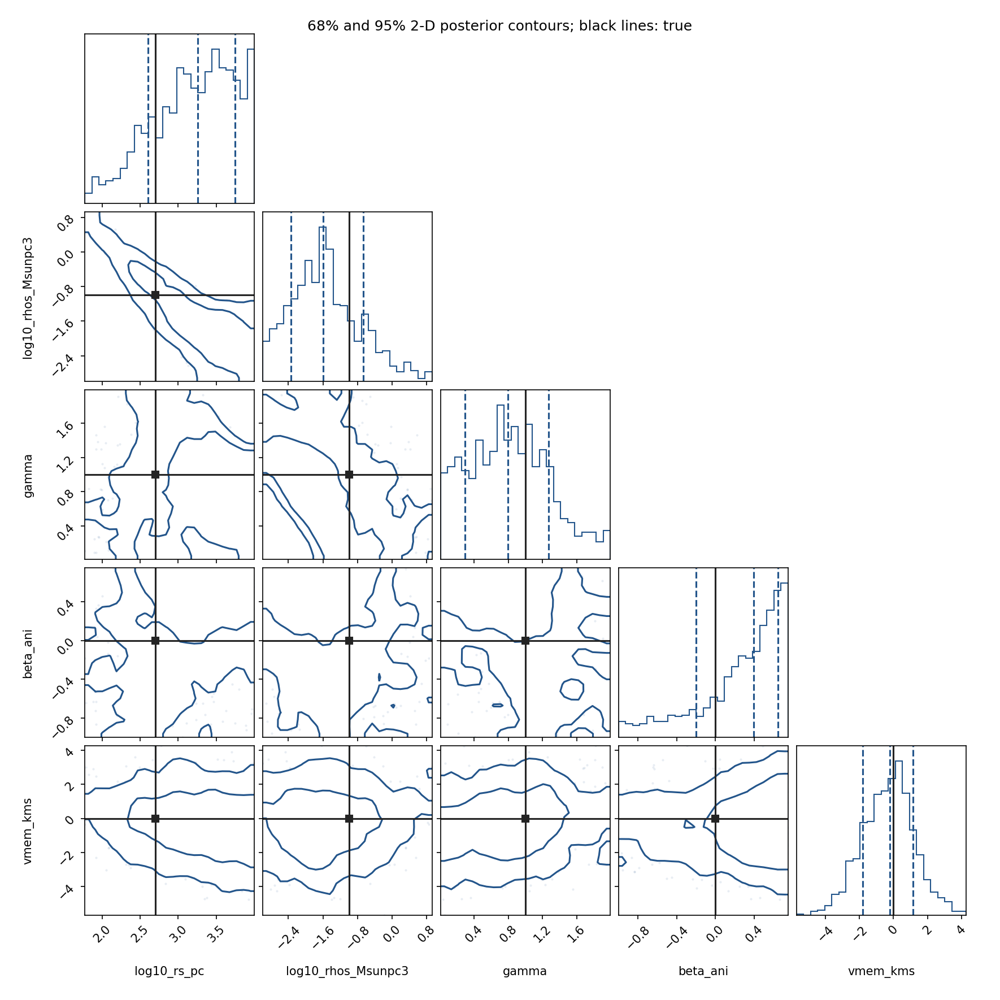

Spherical analysis with saved posteriors#
After the step-by-step tutorials, use this worked example to compare the complete NumPy/emcee and JAX/NumPyro storage workflows on the same data. Unlike the minimal Quickstart, these scripts include checkpoint restart and additional diagnostics.
Build a Plummer + generalized NFW + constant anisotropy model, generate
mock velocities, run MCMC, resume from disk, and inspect the saved posterior.
The generalized NFW halo uses ZhaoModel with fixed a=1, b=3 and a sampled
inner slope gamma. The small dataset lets the complete example run on a CPU.
Install the package using the installation guide. The emcee
example needs the plotting extra; the NumPyro example also needs
numpyro_cpu. Run the scripts below from the source checkout. Use a new output
directory for each example.
Model and mock observations#
Both backends use the same 32 mock stars. Lengths are in pc, velocities in km/s,
and halo densities in solar masses per cubic parsec. The Plummer tracer weights
the kinematics and contributes no gravitational mass. The tracer scale, Zhao
exponents alpha=1, beta=3 and untruncated halo cutoff are fixed. The mock has gamma=1
(standard NFW), while inference allows the inner slope to vary from 0 to 2.
import numpy as np
from jeanspy.model import DSphModel, PlummerModel, ZhaoModel, ConstantAnisotropyModel
# This example fixes photometry and the outer halo shape, and fits five parameters.
true_params = dict(re_pc=200., rs_pc=500., rhos_Msunpc3=.1,
alpha=1., beta=3., gamma=1., r_t_pc=np.inf, beta_ani=0., vmem_kms=0.)
truth_model = DSphModel(vmem_kms=true_params["vmem_kms"], submodels={
"StellarModel": PlummerModel(re_pc=true_params["re_pc"]),
"DMModel": ZhaoModel(**{k: true_params[k] for k in
("rs_pc", "rhos_Msunpc3", "alpha", "beta", "gamma", "r_t_pc")}),
"AnisotropyModel": ConstantAnisotropyModel(beta_ani=true_params["beta_ani"]),
})
rng = np.random.default_rng(123)
u = rng.uniform(size=32)
R_pc = true_params["re_pc"] * np.sqrt(u / (1-u)) # Projected Plummer radii.
e_vlos_kms = np.full(R_pc.shape, 2.)
sigma2_true = truth_model.sigmalos2(R_pc, n=256, n_kernel=64)
vlos_kms = rng.normal(true_params["vmem_kms"], np.sqrt(sigma2_true + e_vlos_kms**2))
data = dict(R_pc=R_pc, vlos_kms=vlos_kms, e_vlos_kms=e_vlos_kms)
{kind=link}

Mock observations generated by the code above, with random seed 123.#
We sample five parameters with the same uniform priors in both backends:
Sampling coordinate |
Lower |
Upper |
Physical meaning |
|---|---|---|---|
|
1.5 |
4.0 |
Logarithm of the halo scale radius |
|
-3.0 |
1.0 |
Logarithm of the halo density scale |
|
0.0 |
2.0 |
Inner halo density slope |
|
-1.0 |
0.75 |
Constant spherical anisotropy |
|
-50 |
50 |
Systemic velocity in km/s |
The priors on the logarithms are log-uniform in the physical scales. These
bounds illustrate this mock analysis; choose priors for the scientific problem
being studied. With five parameters and only 32 stars, degeneracies and prior
sensitivity are expected; see the MCMC notebook. The standalone
scripts share one mock dataset generated by the NumPy solver at n=256,
n_kernel=64; the notebooks generate their own mocks with their displayed JAX
settings, so their numerical outputs need not match these scripts exactly.
Sample and inspect the posterior#
Run the complete example:
python examples/docs_quickstart_emcee.py --output-dir /tmp/jeanspy-emcee-example
Construct the model. NumPy/SciPy components store their physical parameters.
import numpy as np
import emcee
from jeanspy.model import DSphModel, PlummerModel, ZhaoModel, ConstantAnisotropyModel
from pathlib import Path
import argparse
from docs_quickstart_data import data
from docs_quickstart_plots import plot_data, plot_posterior
R_pc, vlos_kms, e_vlos_kms = (data[k] for k in ("R_pc", "vlos_kms", "e_vlos_kms"))
model = DSphModel(vmem_kms=0., submodels={
"StellarModel": PlummerModel(re_pc=200.),
"DMModel": ZhaoModel(rs_pc=500., rhos_Msunpc3=.1,
alpha=1., beta=3., gamma=1., r_t_pc=np.inf),
"AnisotropyModel": ConstantAnisotropyModel(beta_ani=0.),
})
sigma_kms = np.sqrt(model.sigmalos2(R_pc, n=128, n_kernel=32))
Define the posterior, sample and resume. The Gaussian velocity likelihood
adds the measurement-error variance to the Jeans prediction. The HDF5 backend
stores the ensemble and its random state. Reopening that backend and passing
None continues from the saved state. Keep the model, priors and observations
identical when using this emcee interface; the JeansPy
Sampler adds analysis-identity
checks for its supported estimation-model classes.
# Sample halo radius, density, inner slope, anisotropy and systemic velocity.
# These illustrative priors are uniform in the named coordinates.
names = ["log10_rs_pc", "log10_rhos_Msunpc3", "gamma", "beta_ani", "vmem_kms"]
lower = np.array([1.5, -3., 0., -1., -50.])
upper = np.array([4., 1., 2., .75, 50.])
def log_probability(theta):
if not np.all((lower < theta) & (theta < upper)):
return -np.inf
log_rs, log_rho, g, beta, mean = theta
model.update(rs_pc=10**log_rs, rhos_Msunpc3=10**log_rho,
gamma=g, beta_ani=beta, vmem_kms=mean)
variance = model.sigmalos2(R_pc, n=128, n_kernel=32) + e_vlos_kms**2
return -.5 * np.sum(np.log(2*np.pi*variance) + (vlos_kms-mean)**2/variance)
def run(output_dir, num_steps=256, resume_steps=128):
# A new directory prevents an accidental reset of an existing analysis.
output_dir = Path(output_dir)
output_dir.mkdir(parents=True, exist_ok=False)
np.savetxt(output_dir / "observations.csv", np.column_stack(list(data.values())),
delimiter=",", header=",".join(data), comments="")
plot_data(data, output_dir)
rng = np.random.default_rng(42)
initial = np.array([np.log10(500.), -1., 1., 0., 0.])
walkers = initial + rng.normal(size=(16, len(names))) * [.05, .05, .05, .05, .5]
backend = emcee.backends.HDFBackend(str(output_dir / "chain.h5"))
sampler = emcee.EnsembleSampler(16, len(names), log_probability, backend=backend)
sampler.random_state = np.random.RandomState(42).get_state()
sampler.run_mcmc(walkers, num_steps, progress=False)
first = backend.get_chain().copy()
# resume-start
# Reopen the same target and data. None loads the stored walker/random state.
restored_backend = emcee.backends.HDFBackend(str(output_dir / "chain.h5"))
resumed = emcee.EnsembleSampler(16, len(names), log_probability, backend=restored_backend)
resumed.run_mcmc(None, resume_steps, progress=False)
np.testing.assert_array_equal(restored_backend.get_chain()[:num_steps], first)
# resume-end
chain = restored_backend.get_chain(discard=num_steps//2)
samples = chain.reshape(-1, len(names))
print("Stored chain shape:", restored_backend.get_chain().shape)
print("Warmup discarded:", num_steps//2)
print("Original stored draws preserved:", True)
print("Mean acceptance fraction:", round(float(resumed.acceptance_fraction.mean()), 3))
print("Parameter 16% 50% 84%")
for name, row in zip(names, np.quantile(samples, [.16, .5, .84], axis=0).T):
print(f"{name:24s} {row[0]:8.3f} {row[1]:8.3f} {row[2]:8.3f}")
print("Short-run autocorrelation-time estimates:")
print(np.round(emcee.autocorr.integrated_time(chain, tol=0), 1))
print("Walkers interact: no R-hat from this single ensemble.")
plot_posterior(chain.transpose(1, 0, 2), names,
[np.log10(500.), -1., 1., 0., 0.], output_dir)
assert np.all(np.isfinite(restored_backend.get_log_prob()))
return restored_backend
Recorded execution result. The first run stores 256 steps; the resumed run adds 128. The first 128 steps are discarded when plotting and summarizing this example.
Stored chain shape: (384, 16, 5)
Warmup discarded: 128
Original stored draws preserved: True
Mean acceptance fraction: 0.418
Parameter 16% 50% 84%
log10_rs_pc 2.438 3.130 3.616
log10_rhos_Msunpc3 -2.284 -1.432 -0.394
gamma 0.281 0.889 1.373
beta_ani -0.455 0.184 0.637
vmem_kms -1.630 -0.123 1.150
Short-run autocorrelation-time estimates:
[26.9 26.6 24.7 19.6 23.8]
Walkers interact: no R-hat from this single ensemble.
{kind=link}

Posterior histograms and walker traces. Dashed red lines mark the generating values.#
{kind=link}

Mean autocorrelation across walkers. A short-chain estimate of its integrated time is exploratory; interacting walkers are not independent chains for R-hat.#
{kind=link}

The corner plot shows 68% and 95% enclosed-probability contours in each 2-D marginal. The diagonal dashed lines mark 16%, 50% and 84% quantiles; black lines mark the generating values. Contours are estimated from smoothed histograms. A mock-data posterior need not peak at the generating value.#
Run the complete example in double precision:
JEANSPY_JAX_PLATFORM=cpu JEANSPY_JAX_ENABLE_X64=true \
python examples/docs_quickstart_numpyro.py --output-dir /tmp/jeanspy-numpyro-example
Construct the model. JAX components receive physical parameters explicitly.
Import the components from jeanspy.model_jax and the likelihood and
sampler from jeanspy.sampler_numpyro.
import os
os.environ.setdefault("JEANSPY_JAX_PLATFORM", "cpu")
os.environ.setdefault("JEANSPY_JAX_ENABLE_X64", "true")
# Import JeansPy before JAX so its precision/device settings take effect.
from jeanspy.model_jax import (
DSphModel, PlummerModel, ZhaoModel, ConstantAnisotropyModel,
)
from jeanspy.sampler_numpyro import JeansLikelihoodModel, NumPyroSampler, ParameterSpec
import jax
import numpy as np
import numpyro.distributions as dist
from numpyro.infer import MCMC, NUTS, init_to_value
from pathlib import Path
import argparse
import arviz as az
from docs_quickstart_data import data
from docs_quickstart_plots import plot_data, plot_posterior
R_pc, vlos_kms, e_vlos_kms = (data[k] for k in ("R_pc", "vlos_kms", "e_vlos_kms"))
model = DSphModel(submodels={
"StellarModel": PlummerModel(),
"DMModel": ZhaoModel(),
"AnisotropyModel": ConstantAnisotropyModel(),
})
fixed = dict(re_pc=200., alpha=1., beta=3., r_t_pc=np.inf)
truth = dict(**fixed, rs_pc=500., rhos_Msunpc3=.1, gamma=1., beta_ani=0.)
options = dict(solver="kernel", n_u=128, n_kernel=32,
dm_mass_method="numeric", dm_mass_n_steps=128)
sigma_kms = np.sqrt(model.sigmalos2(R_pc, params=truth, **options))
Define priors and run NUTS. ParameterSpec associates sampling coordinates
with their physical parameters. NumPyroSampler saves a checkpoint and a
backend-native ArviZ chunk. A fresh sampler instance resumes without repeating
warmup, after checking that the analysis and environment match the stored state.
def physical_parameters(sampled):
return {**fixed, **sampled}
likelihood = JeansLikelihoodModel(
model,
[ParameterSpec.pow10("log10_rs_pc", dist.Uniform(1.5, 4.), param_name="rs_pc"),
ParameterSpec.pow10("log10_rhos_Msunpc3", dist.Uniform(-3., 1.),
param_name="rhos_Msunpc3"),
ParameterSpec("gamma", dist.Uniform(0., 2.)),
ParameterSpec("beta_ani", dist.Uniform(-1., .75)),
ParameterSpec("vmem_kms", dist.Uniform(-50., 50.))],
parameter_postprocess=physical_parameters,
sigmalos2_kwargs=options,
)
def build_mcmc(num_warmup, num_samples):
kernel = NUTS(likelihood, target_accept_prob=.85,
init_strategy=init_to_value(values={
"log10_rs_pc": np.log10(500.), "log10_rhos_Msunpc3": -1.,
"gamma": 1., "beta_ani": 0., "vmem_kms": 0.}))
return MCMC(kernel, num_warmup=num_warmup, num_samples=num_samples,
num_chains=2, chain_method="sequential", progress_bar=False)
def run(output_dir, num_warmup=200, num_samples=256):
output_dir = Path(output_dir)
output_dir.mkdir(parents=True, exist_ok=False)
np.savetxt(output_dir / "observations.csv", np.column_stack(list(data.values())),
delimiter=",", header=",".join(data), comments="")
plot_data(data, output_dir)
# checkpoint-start
with NumPyroSampler(build_mcmc(num_warmup, num_samples), output_dir=output_dir,
storage_backend="h5netcdf", async_writes=False) as first_sampler:
first = first_sampler.run(jax.random.PRNGKey(42), **data, resume=False)
original = first_sampler.load_samples()["posterior"].ds.load()
print("First checkpoint saved:", first.checkpoint_path.is_file())
# A fresh sampler object restores the state and skips the completed warmup.
with NumPyroSampler(build_mcmc(num_warmup, num_samples), output_dir=output_dir,
storage_backend="h5netcdf", async_writes=False) as resumed_sampler:
resumed = resumed_sampler.run(jax.random.PRNGKey(43), **data, resume=True)
idata = resumed_sampler.load_samples(combine=True)
posterior = idata["posterior"].ds
print("Resumed from checkpoint:", resumed.resumed)
print("Stored chunks:", len(resumed_sampler.list_chunk_paths()))
print("Stored samples per parameter:", posterior["beta_ani"].shape)
for name in original.data_vars:
np.testing.assert_array_equal(posterior[name].values[:, :num_samples],
original[name].values)
# checkpoint-end
# diagnostics-start
names = ["log10_rs_pc", "log10_rhos_Msunpc3", "gamma", "beta_ani", "vmem_kms"]
print(az.summary(idata, var_names=names).round(3).to_string())
print("Divergences:", int(idata["sample_stats"]["diverging"].sum()))
chain = np.stack([posterior[n].values for n in names], axis=-1)
plot_posterior(chain, names, [np.log10(500.), -1., 1., 0., 0.], output_dir)
# diagnostics-end
assert np.all(np.isfinite(chain))
return idata
Recorded execution result. Two chains run sequentially, each with 200 warmup steps and 256 posterior draws. Resuming adds another 256 draws per chain. The ArviZ summary and divergences below are calculated from the combined saved chunks.
First checkpoint saved: True
Resumed from checkpoint: True
Stored chunks: 2
Stored samples per parameter: (2, 512)
mean sd eti89_lb eti89_ub ess_bulk ess_tail r_hat mcse_mean mcse_sd
log10_rs_pc 3.19 0.53 2.3 3.9 287 296 1.00 0.031 0.019
log10_rhos_Msunpc3 -1.5 0.8 -2.7 -0.13 250 321 1.01 0.05 0.035
gamma 0.81 0.47 0.1 1.6 453 493 1.01 0.022 0.013
beta_ani 0.26 0.43 -0.65 0.72 536 466 1.00 0.019 0.015
vmem_kms -0.3 1.53 -2.7 2.1 591 585 1.00 0.062 0.045
Divergences: 0
{kind=link}

Posterior histograms and the two independent chain traces. Dashed red lines mark the generating values.#
{kind=link}

Mean autocorrelation across the two chains.#
{kind=link}

Marginal and pairwise posterior distributions, with the same conventions as the emcee panels.#
For rank-normalized R-hat, bulk/tail ESS, MCSE, BFMI, tree depth and locating NUTS divergences in a corner plot, follow the MCMC diagnostics tutorial.
The displayed outputs are retained from the execution identified by the metadata; a documentation rebuild does not rerun them. These are short tutorial runs. Inspect chain mixing, effective sample sizes, R-hat for independent chains and divergences, and extend the analysis as needed. Good sampler diagnostics do not establish the physical adequacy of a Jeans model or the calibration of its intervals.
Plotting and saved files#
The figures use the posterior draws loaded from disk. The shared plotting function also makes the dimensional convention explicit:
Plotting code
"""Plot the actual observations and stored posterior draws in the Quickstart."""
from pathlib import Path
import matplotlib.pyplot as plt
import numpy as np
import corner
from emcee.autocorr import function_1d
def plot_data(data, output_dir):
"""Save the mock velocity observations, including measurement errors."""
fig, ax = plt.subplots(figsize=(6, 3.6), layout="constrained")
ax.errorbar(data["R_pc"], data["vlos_kms"], yerr=data["e_vlos_kms"],
fmt="o", ms=4, color="#23558b", ecolor=".6")
ax.set(xscale="log", xlabel="Projected radius [pc]", ylabel="LOS velocity [km/s]")
fig.savefig(Path(output_dir) / "observations.png", dpi=150)
plt.close(fig)
# plots-start
def plot_posterior(chain, names, truth, output_dir):
# chain is (chain or walker, draw, parameter), after discarding warmup.
# emcee walkers interact; these panels do not treat them as independent chains.
flat = chain.reshape(-1, len(names))
fig, axes = plt.subplots(len(names), 2, figsize=(9, 1.8*len(names)),
layout="constrained")
for k, name in enumerate(names):
axes[k, 0].hist(flat[:, k], bins=30, density=True, color="#23558b", alpha=.8)
axes[k, 0].axvline(truth[k], color="#bb4430", ls="--")
axes[k, 0].set(ylabel=name)
axes[k, 1].plot(chain[:, :, k].T, alpha=.45, lw=.6)
axes[k, 1].axhline(truth[k], color="#bb4430", ls="--")
axes[-1, 0].set_xlabel("Posterior value")
axes[-1, 1].set_xlabel("Stored draw after warmup")
fig.savefig(Path(output_dir) / "trace.png", dpi=150)
plt.close(fig)
# Explicit enclosed probabilities: the corner defaults use 2-D sigma radii.
fig = corner.corner(flat, labels=names, truths=truth, truth_color="#242424",
levels=(.68, .95), bins=24, smooth=1.,
quantiles=(.16, .5, .84), color="#23558b",
plot_density=False, fill_contours=False,
label_kwargs={"fontsize": 10})
fig.suptitle("68% and 95% 2-D posterior contours; black lines: true", fontsize=12)
fig.savefig(Path(output_dir) / "posterior.png", dpi=150)
plt.close(fig)
fig, ax = plt.subplots(figsize=(6, 3.6), layout="constrained")
for k, name in enumerate(names):
acf = np.mean([function_1d(c[:, k]) for c in chain], axis=0)
ax.plot(acf[:min(100, len(acf))], label=name)
ax.set(xlabel="Lag [stored draws]", ylabel="Mean autocorrelation")
ax.legend(fontsize="small")
fig.savefig(Path(output_dir) / "autocorrelation.png", dpi=150)
plt.close(fig)
# plots-end
Each output directory contains observations.csv, the three posterior figures
and the mock-observation figure. The emcee directory contains chain.h5;
the NumPyro directory contains metadata.json, last_state.pkl and two
chunks/*.nc stores. See saving and resuming for longer
analyses and axisymmetric models for flattened systems.
The execution metadata records package
versions, source hashes and output hashes. To regenerate the displayed results
from a checkout, run python scripts/run_quickstart.py in the locked docs
environment. Ordinary documentation builds reuse these recorded outputs; the
metadata identifies the source and environment used to produce them. Both
workflows run again on a published GitHub release or a manual Documentation
workflow run with run_mcmc=true.
NumPy/SciPy estimation-model wrapper#
The analysis above supplies its own log posterior to emcee. When using
JeansPy estimation models, Sampler adds HDF5
storage and restart identity checks. Its FlatPriorModel uses an ordered
table with finite lower and upper bounds. Spherical convenience models
also use an explicit photometric prior on log10_re_pc; a systemic-velocity
prior is not inferred from the velocities unless the caller explicitly
requests the data-derived option.
This separate example writes and resumes six steps in a temporary directory. Its autocorrelation estimate may be undefined because the chain is deliberately short. The wrapper still computes that diagnostic when early stopping is disabled; the example only exercises the storage workflow.
"""Short NumPy/SciPy and emcee save/restart workflow; these draws are not converged inference."""
from pathlib import Path
from tempfile import TemporaryDirectory
import numpy as np
import pandas as pd
from jeanspy.model import get_default_estimation_model
from jeanspy.sampler import Sampler
# numpy-inference-start
data = pd.DataFrame({"R_pc": [30., 100., 300., 500.],
"vlos_kms": [-4., 2., 8., -6.], "e_vlos_kms": [2.] * 4})
prior = pd.DataFrame(
{"lower": [-30., 2., 2.5, -3., 3.5, -.3],
"upper": [30., 2.6, 3.5, -1., 4.5, .3]},
index=["vmem_kms", "log10_re_pc", "log10_rs_pc",
"log10_rhos_Msunpc3", "log10_r_t_pc", "log10_one_minus_beta_ani"],
)
model = get_default_estimation_model(data, 2.3, .1, config=prior)
center = np.array([0., 2.3, 3., -2., 4., 0.])
def initial_state(n):
if n is None: # Sampler also checks the conversion of one parameter vector.
return center
return center + np.random.default_rng(42).normal(0., .01, (n, len(center)))
# Use a persistent output directory for your own analysis. Here it is temporary.
with TemporaryDirectory() as directory:
sampler = Sampler(model, initial_state, nwalkers=16, prefix=directory + "/")
sampler.run_mcmc(4, 1, enable_convergence_check=False)
first = sampler.get_chain().copy()
resumed = Sampler(model, initial_state, nwalkers=16, prefix=directory + "/")
resumed.run_mcmc(2, 1, enable_convergence_check=False)
chain = resumed.get_chain()
np.testing.assert_array_equal(chain[:4], first)
assert chain.shape == (6, 16, 6) and Path(resumed.filename).is_file()
# Six steps only check this workflow. Do not report parameter estimates from it.
Choose the same likelihood and prior measure when comparing samplers. Keep raw draws and diagnostics when a stopping criterion fails; convergence and calibration need their own checks as discussed in the MCMC tutorial.